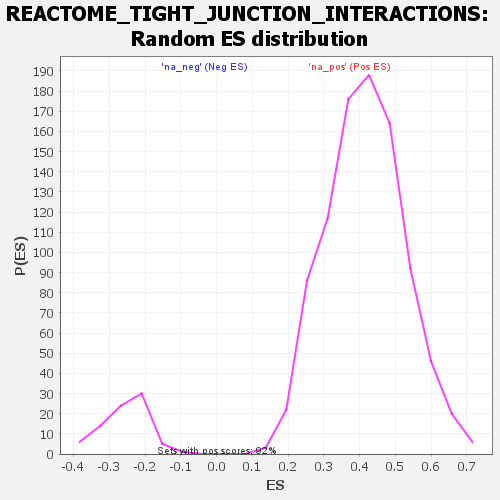

Profile of the Running ES Score & Positions of GeneSet Members on the Rank Ordered List
| Dataset | DGErankName |
| Phenotype | NoPhenotypeAvailable |
| Upregulated in class | na_pos |
| GeneSet | REACTOME_TIGHT_JUNCTION_INTERACTIONS |
| Enrichment Score (ES) | 0.7845494 |
| Normalized Enrichment Score (NES) | 1.8911649 |
| Nominal p-value | 0.0 |
| FDR q-value | 0.011964678 |
| FWER p-Value | 0.213 |
| SYMBOL | RANK IN GENE LIST | RANK METRIC SCORE | RUNNING ES | CORE ENRICHMENT | |
|---|---|---|---|---|---|
| 1 | CLDN4 | 27 | 7.202 | 0.1736 | Yes |
| 2 | CLDN8 | 82 | 4.281 | 0.2744 | Yes |
| 3 | CLDN1 | 198 | 3.314 | 0.3475 | Yes |
| 4 | PARD6G | 212 | 3.259 | 0.4261 | Yes |
| 5 | CLDN7 | 213 | 3.250 | 0.5052 | Yes |
| 6 | CRB3 | 218 | 3.217 | 0.5833 | Yes |
| 7 | CLDN23 | 304 | 2.904 | 0.6485 | Yes |
| 8 | PRKCI | 551 | 2.341 | 0.6894 | Yes |
| 9 | F11R | 906 | 1.917 | 0.7129 | Yes |
| 10 | CLDN3 | 1078 | 1.785 | 0.7452 | Yes |
| 11 | PARD6B | 1472 | 1.550 | 0.7572 | Yes |
| 12 | PATJ | 1610 | 1.492 | 0.7845 | Yes |
| 13 | PARD3 | 2541 | 1.150 | 0.7517 | No |
| 14 | CLDN20 | 5555 | 0.428 | 0.5648 | No |
| 15 | CLDN11 | 6706 | 0.204 | 0.4945 | No |
| 16 | CLDN10 | 6884 | 0.177 | 0.4872 | No |
| 17 | CLDN12 | 7393 | 0.094 | 0.4563 | No |
| 18 | CLDN5 | 7502 | 0.080 | 0.4511 | No |
| 19 | CLDN9 | 10832 | -0.246 | 0.2392 | No |
| 20 | PARD6A | 11726 | -0.317 | 0.1884 | No |
| 21 | CLDN15 | 12866 | -0.431 | 0.1243 | No |
| 22 | CLDN18 | 13935 | -0.587 | 0.0687 | No |
| 23 | CLDN6 | 14745 | -0.835 | 0.0361 | No |
